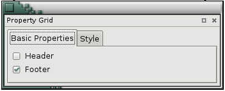
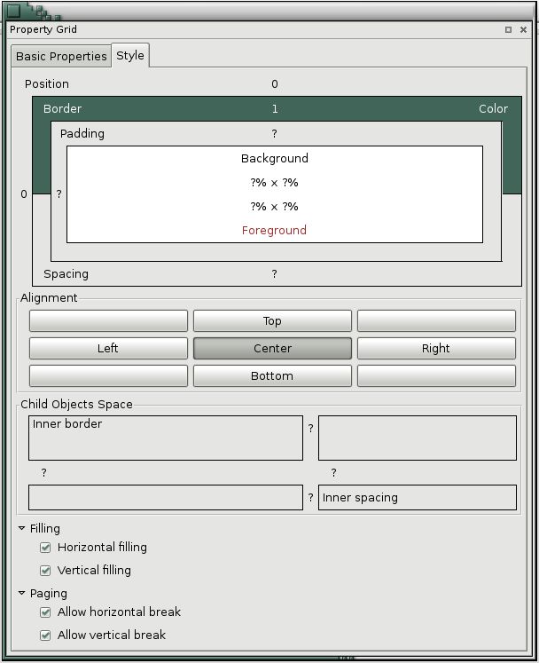
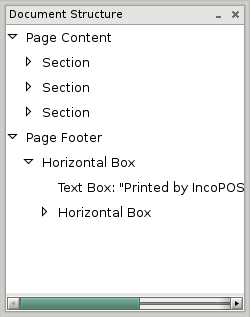
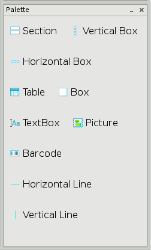

Document Designer
With the module Document designer the application provides additional functionality to edit a certain document in a style you would like to have it. The module has a wide range of tools to ensure freedom of action. The module can be called from the button Design located in the lower right corner of the window in which the document is loaded.
The Document designer contains 4 sections � Table with properties (divided by two Main properties and Style), Structure of the document, Palette and Document.
Table with properties contains two sections:
1. Basic properties � in this section can be selected source for the text in the document, to change, to select format, to be justified or resized, to select the font size for the document.

2. Style � in this section allows you to select color of the document, of the font, alignment, margins, distance, borders, page layout.

The section Document structure contains all elements of the document, for which design is made.

Section Palette is a list with available tools for editing as well as elements to add to the document.

Each of the sections can be hided and again to be shown from View->Document Designer
Button Save is used to record all changes made so far.
Button Reset restores the first condition of the document before the changes.
Click the  button to print the document.
button to print the document.
Click the  button to export
the document to PDF, CSV, Excel, Web or XML format.
button to export
the document to PDF, CSV, Excel, Web or XML format.
Use the  button to zoom the document from
10% to 500%.
button to zoom the document from
10% to 500%.
Click the  button to close the document.
button to close the document.
�2006-2015 Microinvest, All rights reserved